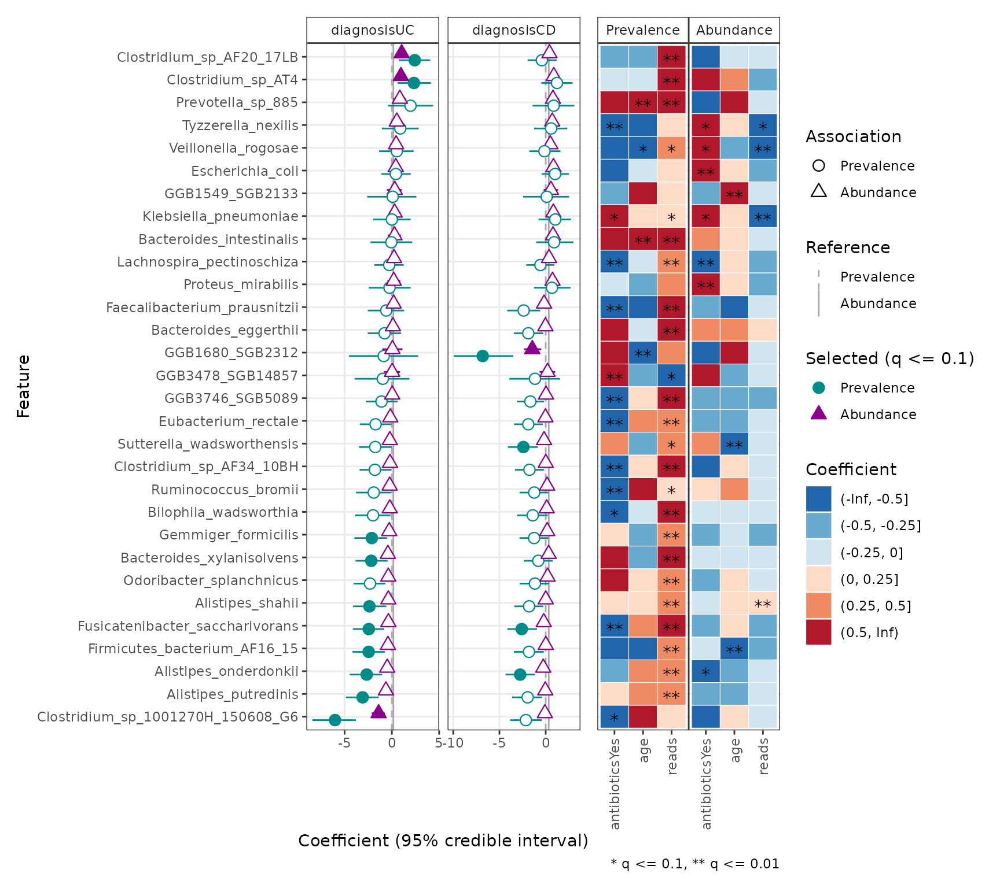
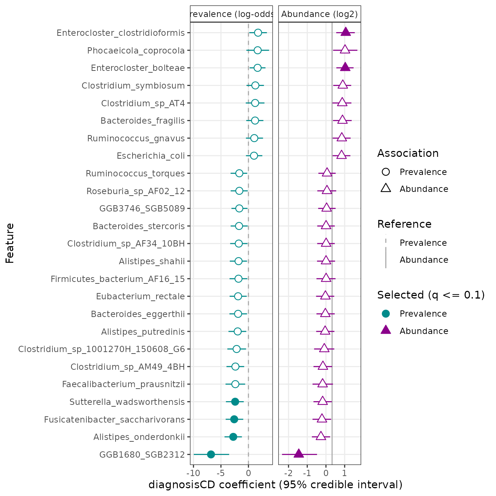
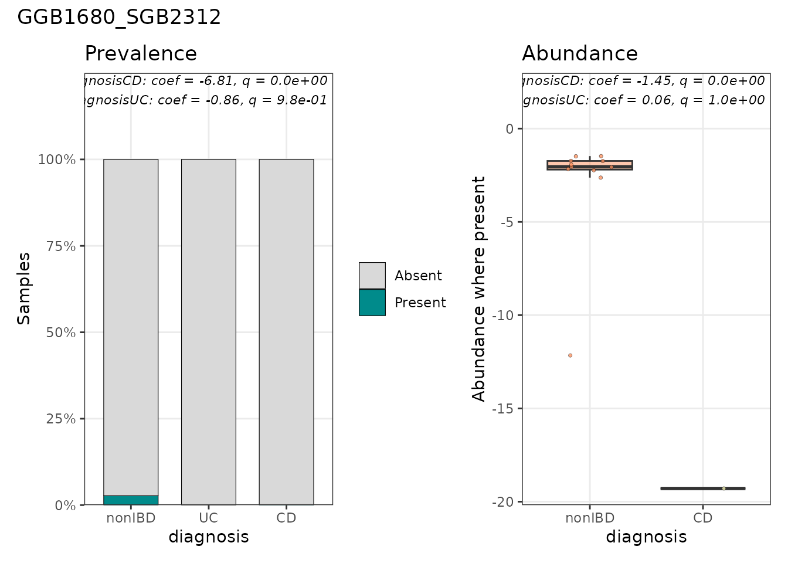
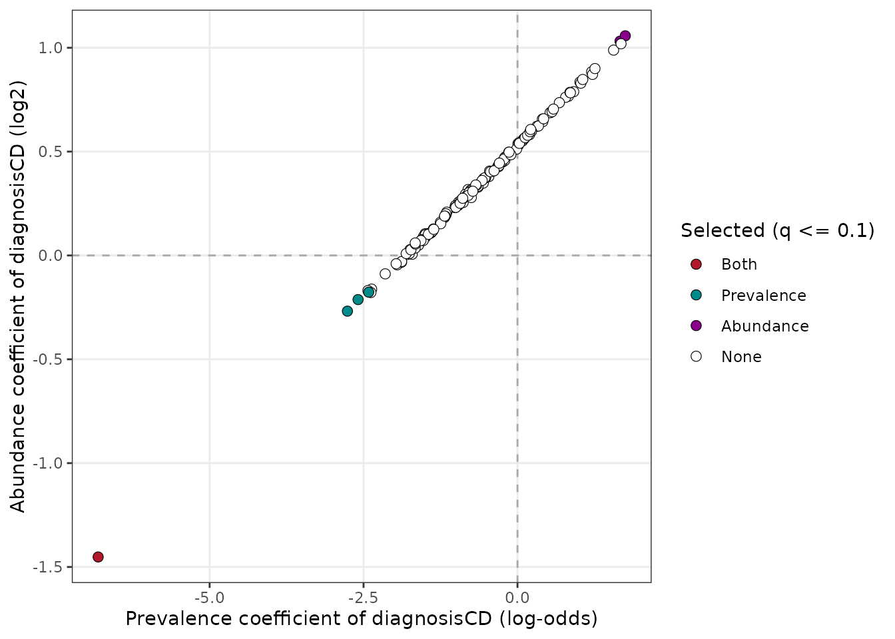

This vignette runs bayome on a real data set: stool metagenomes from the inflammatory bowel disease cohort of the Integrative Human Microbiome Project (HMP2 / IBDMDB). It shows how to
- prepare the data and write the model formula,
- fit the default model,
- read the results: effects, intervals, local false sign rates and q-values,
- plot them,
- look at the estimated link between prevalence and abundance,
- change the selection rule and the priors.
Fitting the model takes several minutes, so the vignette shows the
call and then reads results saved by
data-raw/hmp2_example.R, which runs exactly that call.
The data
The package includes the HMP2 example data distributed with MaAsLin3:
the relative abundances of 151 species in 1527 stool samples, and the
metadata of those samples. See inst/extdata/README.md for
the source and the citations.
taxa <- read.delim(system.file("extdata", "HMP2_taxonomy.tsv",
package = "bayome"), row.names = 1)
meta <- read.delim(system.file("extdata", "HMP2_metadata.tsv",
package = "bayome"), row.names = 1)
dim(taxa)
#> [1] 1527 151
taxa[1:3, 1:3]
#> Phocaeicola_vulgatus Faecalibacterium_prausnitzii
#> CSM5FZ3N_P 0.4265226 0.060255109
#> CSM5FZ3R_P 0.5369584 0.007396904
#> CSM5FZ3T_P 0.5911821 0.000000000
#> Bacteroides_uniformis
#> CSM5FZ3N_P 0.2692411
#> CSM5FZ3R_P 0.2526048
#> CSM5FZ3T_P 0.0000000Each participant gave several samples over time:
length(unique(meta$participant_id))
#> [1] 120
summary(as.vector(table(meta$participant_id)))
#> Min. 1st Qu. Median Mean 3rd Qu. Max.
#> 1.00 10.00 12.00 12.72 17.25 25.00
table(meta$diagnosis)
#>
#> CD nonIBD UC
#> 685 405 437Many species are present in only a few samples. These are the features for which sharing information across features matters most:
n_present <- colSums(taxa > 0)
summary(n_present)
#> Min. 1st Qu. Median Mean 3rd Qu. Max.
#> 3.0 126.0 434.0 493.6 778.0 1374.0
sum(n_present < 30)
#> [1] 13We set the reference levels explicitly: healthy controls
(nonIBD) and no antibiotics.
The model formula
The question is how the microbiome differs between patients with
Crohn’s disease (CD) or ulcerative colitis (UC) and controls, so the
exposure is diagnosis. Antibiotic use, age
and sequencing depth (reads) are adjustment
covariates. Repeated samples of the same participant are
handled with a random intercept, (1 | participant_id). The
formula uses lme4 notation; bm_inla_formula() shows how
bayome translates it for INLA, without fitting anything:
form <- ~ diagnosis + antibiotics + age + reads + (1 | participant_id)
bm_inla_formula(form, meta)
#> <bm_inla_model>
#> INLA formula:
#> y ~ 1 + diagnosis + antibiotics + age + reads + f(.bm_re_participant_id, model = "iid", hyper = .bm_hyper$random)The dysbiosis score of the HMP2 metadata is not used: it is computed from the microbiome itself, so it is closer to an outcome than to a covariate.
Fitting the model
set.seed(1)
fit <- bayome(
input_data = taxa,
input_metadata = meta,
output = "hmp2_bayome",
formula = form,
exposure = "diagnosis",
normalization = "TSS",
transform = "LOG",
cores = 4
)The default model (shrinkage = "joint") fits all species
and both parts in one INLA model. For the exposure
(diagnosisUC and diagnosisCD):
- prevalence (presence/absence, all samples): a logistic model, with each species estimated from its own data;
-
abundance (log2 relative abundance, samples where
the species is present): a linear model whose species effects are linked
to the prevalence effects,
u_A = lambda * u_P + e, and share a common prior.
The adjustment covariates get one effect per species and part, with a
fixed, weakly informative prior, so they add no hyperparameters. Here
the model has six: lambda and the spread of e
for CD and for UC, and the variance of the participant effect in each
part. The residual variances, one per species, are estimated outside
INLA by variational updates ("vb").
Continuous covariates (age, reads) are
standardised, abundance effects are compared with their median across
species (compositional correction), and associations are selected by
Benjamini–Hochberg on 2·lfsr.
fit$results holds the results table, and
output gets all_results.tsv and
significant_results.tsv. Here we read the saved
results:
res <- read.delim(system.file("extdata", "HMP2_bayome_results.tsv",
package = "bayome"))
info <- read.delim(system.file("extdata", "HMP2_bayome_lambda.tsv",
package = "bayome"))The fit took 4.8 minutes on a laptop with 4 threads.
The results table
There is one row per species, coefficient and model part:
str(res)
#> 'data.frame': 1510 obs. of 18 variables:
#> $ feature : chr "Alistipes_putredinis" "Clostridium_sp_1001270H_150608_G6" "Clostridium_sp_AF20_17LB" "Clostridium_sp_1001270H_150608_G6" ...
#> $ metadata : chr "diagnosis" "diagnosis" "diagnosis" "diagnosis" ...
#> $ value : chr "UC" "UC" "UC" "UC" ...
#> $ name : chr "diagnosisUC" "diagnosisUC" "diagnosisUC" "diagnosisUC" ...
#> $ coef : num -3.09 -6.02 1.04 -1.4 -2.42 ...
#> $ stderr : num 0.902 1.127 0.278 0.355 0.83 ...
#> $ lower_95 : num -4.857 -8.407 0.466 -2.143 -4.097 ...
#> $ upper_95 : num -1.398 -3.804 1.572 -0.742 -0.854 ...
#> $ prob_positive : num 0 0 1 0 0 0 0 0 1 0 ...
#> $ lfsr : num 0 0 0 0 0 0 0 0 0 0 ...
#> $ qval_individual: num 0 0 0 0 0 0 0 0 0 0 ...
#> $ lfsr_joint : num 0 0 0 0 0 0 0 0 0 0 ...
#> $ qval_joint : num 0 0 0 0 0 0 0 0 0 0 ...
#> $ null_hypothesis: num 0 0 0.158 0.158 0 ...
#> $ error : chr NA NA NA NA ...
#> $ model : chr "prevalence" "prevalence" "abundance" "abundance" ...
#> $ N : int 1527 1527 1527 1527 1527 1527 1527 1527 1527 1527 ...
#> $ N_not_zero : int 873 141 654 141 536 1119 12 12 312 1374 ...coef is the posterior mean, lower_95 and
upper_95 the 95% credible interval, lfsr the
probability that the sign of coef is wrong, and
qval_individual the q-value of the selection rule. There
are no p-values.
Number of associations at qval_individual <= 0.1, per
coefficient and model part:
sig <- res[!is.na(res$qval_individual) & res$qval_individual <= 0.1 &
is.na(res$error), ]
table(sig$name, sig$model)
#>
#> abundance prevalence
#> age 7 6
#> antibioticsYes 22 38
#> diagnosisCD 3 4
#> diagnosisUC 3 10
#> reads 25 113The strongest associations with Crohn’s disease
(diagnosisCD) in abundance:
cd_abun <- sig[sig$name == "diagnosisCD" & sig$model == "abundance", ]
cd_abun <- cd_abun[order(cd_abun$qval_individual), ]
head(cd_abun[, c("feature", "coef", "lower_95", "upper_95", "lfsr",
"qval_individual", "N_not_zero")], 10)
#> feature coef lower_95 upper_95 lfsr
#> 8 GGB1680_SGB2312 -1.451833 -2.3479113 -0.4764332 0.000
#> 9 Enterocloster_clostridioformis 1.057678 0.5492628 1.5420425 0.000
#> 171 Enterocloster_bolteae 1.031847 0.5561010 1.4770612 0.001
#> qval_individual N_not_zero
#> 8 0.00000000 12
#> 9 0.00000000 312
#> 171 0.09866667 866Abundance effects are on the log2 scale: a coef of −2
means that, when the species is present, its relative abundance is about
four times lower in Crohn’s disease than in controls, relative to the
median species.
Plots
All plot functions take a bayome fit or its results
table, and return a ggplot object that can be modified or
saved with ggplot2::ggsave().
Overview. bm_plot_summary() shows the
effects of the top species on every coefficient, with the selected
associations marked: the exposure in the coefficient plot on the left
(the default for a fit; with a results table we name the coefficients)
and the adjustment covariates in the heatmap:
bm_plot_summary(res, n_top = 30, coef_names = c("diagnosisUC", "diagnosisCD"))
Effects with their intervals.
bm_plot_effects() shows one coefficient in both parts, with
95% credible intervals:
bm_plot_effects(res, "diagnosisCD", n_top = 25)
The data behind an association.
bm_plot_association() shows, for one species and one
variable, the share of samples where the species is present and its
abundance where present. With a fit it uses fit$data and
fit$metadata; here we build the same log2 table from the
raw data:
abun <- as.matrix(taxa / rowSums(taxa))
abun[abun == 0] <- NA
abun <- as.data.frame(log2(abun))
top_cd <- cd_abun$feature[1]
bm_plot_association(res, top_cd, "diagnosis", data = abun, metadata = meta)
The link between prevalence and abundance
The model estimates one link lambda per exposure
coefficient: how much the abundance effects follow the prevalence
effects across species. With lambda near 0 the two parts
are unrelated and the abundance part reduces to a hierarchical model;
with lambda > 0, species that become less frequent also
tend to become less abundant when present.
info[, c("name", "lambda")]
#> name lambda
#> 1 diagnosisUC 0.2785170
#> 2 diagnosisCD 0.2908058bm_plot_link() shows the prevalence and abundance
effects of each species for one coefficient. With a fit, the estimated
lambda appears in the subtitle; fit$lambda
holds all of them.
bm_plot_link(res, "diagnosisCD")
For a species with few non-zero samples, the abundance effect borrows
from its prevalence effect through lambda, instead of being
shrunk towards zero.
Choosing a selection rule
selection sets how the posterior probabilities become
q-values, separately for each coefficient:
-
"bh_lfsr"(default): Benjamini–Hochberg on 2·lfsr; -
"rope": posterior probability that the effect is practically null, P(|effect| ≤rope_delta), withrope_delta = 0.5by default; -
"lfsr": running mean of the sorted lfsr.
The rule only changes the q-values, not the posteriors, so it can be
compared on the saved lfsr. For diagnosisCD in
abundance:
d <- res[res$name == "diagnosisCD" & res$model == "abundance" &
is.na(res$error), ]
c(bh_lfsr = sum(p.adjust(pmin(2 * d$lfsr, 1), "BH") <= 0.1),
lfsr = sum(bm_qvalue(d$lfsr) <= 0.1))
#> bh_lfsr lfsr
#> 3 63The running-mean rule selects more: for species without an effect the lfsr behaves like a one-sided p-value, so averaging lfsr values lets more of them through. The default controls the false discovery rate.
Priors
Priors are set with bm_prior() and passed to
bayome(prior = ). For example, a less informative prior for
the prevalence effects of each species:
pr <- bm_prior(fixed_sd_prevalence = 5)
pr$fixed
#> $prevalence
#> [1] 0.04
#>
#> $abundance
#> [1] 0.01
#>
#> $adjustment
#> [1] 0.16
fit2 <- bayome(taxa, meta, output = NULL, formula = form, prior = pr)Session information
sessionInfo()
#> R version 4.6.2 (2026-10-29)
#> Platform: x86_64-pc-linux-gnu
#> Running under: Ubuntu 26.04.1 LTS
#>
#> Matrix products: default
#> BLAS: /usr/lib/x86_64-linux-gnu/openblas-pthread/libblas.so.3
#> LAPACK: /usr/lib/x86_64-linux-gnu/openblas-pthread/libopenblasp-r0.3.32.so; LAPACK version 3.12.0
#>
#> locale:
#> [1] LC_CTYPE=C.UTF-8 LC_NUMERIC=C LC_TIME=C.UTF-8
#> [4] LC_COLLATE=C.UTF-8 LC_MONETARY=C.UTF-8 LC_MESSAGES=C.UTF-8
#> [7] LC_PAPER=C.UTF-8 LC_NAME=C LC_ADDRESS=C
#> [10] LC_TELEPHONE=C LC_MEASUREMENT=C.UTF-8 LC_IDENTIFICATION=C
#>
#> time zone: UTC
#> tzcode source: system (glibc)
#>
#> attached base packages:
#> [1] stats graphics grDevices utils datasets methods base
#>
#> other attached packages:
#> [1] bayome_0.0.0.9000
#>
#> loaded via a namespace (and not attached):
#> [1] Matrix_1.7-6 gtable_0.3.6 jsonlite_2.0.0 dplyr_1.2.1
#> [5] compiler_4.6.2 tidyselect_1.2.1 jquerylib_0.1.4 systemfonts_1.3.4
#> [9] scales_1.4.0 textshaping_1.1.0 yaml_2.3.12 fastmap_1.2.0
#> [13] lattice_0.23-1 ggplot2_4.0.4 R6_2.6.1 labeling_0.4.3
#> [17] patchwork_1.3.2 generics_0.1.4 knitr_1.52 rbibutils_2.4.1
#> [21] tibble_3.3.1 desc_1.4.3 bslib_0.12.0 pillar_1.11.1
#> [25] RColorBrewer_1.1-3 rlang_1.3.0 cachem_1.1.0 xfun_0.62
#> [29] fs_2.1.0 sass_0.5.0 S7_1.0.0 otel_0.3.0
#> [33] cli_3.6.6 withr_3.0.3 pkgdown_2.2.1 magrittr_2.0.5
#> [37] Rdpack_2.6.6 digest_0.6.39 grid_4.6.2 lifecycle_1.0.5
#> [41] reformulas_0.4.4 vctrs_0.7.3 evaluate_1.0.5 glue_1.8.1
#> [45] farver_2.1.2 ragg_1.5.2 rmarkdown_2.32 tools_4.6.2
#> [49] pkgconfig_2.0.3 htmltools_0.5.9